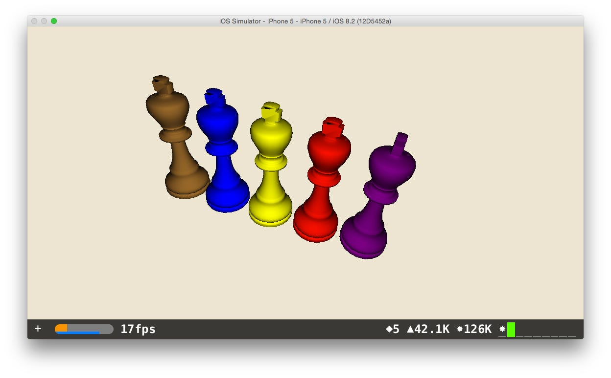

How to Duplicate Geometry from .DAE Files in SceneKit (Swift)
·
Alexander Deplov
The important part of this code is that every duplicated object has it’s own color. Different from the color of the source object.
// Import .dae source
let scene = SCNScene(named: "art.scnassets/chess.dae")!
// Find layer with "queen" name of the figure
let queenNode = scene.rootNode.childNodeWithName("queen", recursively: true)
queenNode?.scale = SCNVector3Make(100, 100, 100)
// Set up scene view
let sceneView = SCNView()
sceneView.frame = self.view.frame
sceneView.scene = scene
sceneView.autoenablesDefaultLighting = true
sceneView.allowsCameraControl = true
sceneView.backgroundColor = UIColor(red: 237/255, green: 229/255, blue: 211/255, alpha: 1)
self.view = sceneView
// Set up camera
let cameraNode = SCNNode()
cameraNode.camera = SCNCamera()
scene.rootNode.addChildNode(cameraNode)
cameraNode.position = SCNVector3(x: -30, y: 0, z: 100)
cameraNode.camera?.automaticallyAdjustsZRange = true
// Create simple for loop
for i in 1...5 {
let box2 = queenNode?.clone() as! SCNNode
let box2Geometry = box2.geometry?.copy() as! SCNGeometry
let box2GeometryNode = SCNNode(geometry: box2Geometry)
box2GeometryNode.scale = SCNVector3Make(100, 100, 100)
box2GeometryNode.position = SCNVector3(x: -20 * Float(i), y: 0, z: 0)
let newMaterial2 = SCNMaterial()
newMaterial2.diffuse.contents = UIColor.yellow
box2GeometryNode.geometry?.firstMaterial = newMaterial2
if i == 2 {
newMaterial2.diffuse.contents = UIColor.red
} else if i < 2 {
newMaterial2.diffuse.contents = UIColor.purple
box2GeometryNode.rotation = SCNVector4Make(0, 1, 0, 1.5)
} else if i > 3 {
newMaterial2.diffuse.contents = UIColor.brown
} else if i == 4 {
newMaterial2.diffuse.contents = UIColor.blue
}
scene.rootNode.addChildNode(box2GeometryNode)
}
Result
